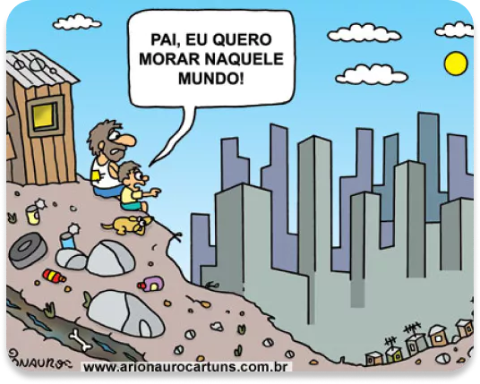

Desigualdade Social
A desigualdade social é um problema crônico que afeta a
maioria dos países ao redor do mundo. É um fenômeno que se
manifesta de diversas formas, desde a disparidade de renda e
acesso à educação e saúde até a exclusão social e
marginalização de grupos populacionais específicos.
Causas, Consequências e Soluções
No Brasil, a desigualdade social é particularmente aguda, com
uma das maiores taxas de desigualdade do mundo. Os dados mostram
que a riqueza está concentrada nas mãos de poucos, enquanto a
maioria da população vive em condições precárias, com acesso
limitado a serviços básicos e poucas oportunidades de ascensão
social.

A desigualdade social tem consequências graves para as pessoas e
para a sociedade como um todo. Ela perpetua a pobreza e a exclusão
social, aumenta a violência e a instabilidade política, e
prejudica o desenvolvimento econômico e humano. Além disso, a
desigualdade é muitas vezes associada à discriminação e
preconceito contra grupos sociais específicos, como mulheres,
negros, LGBTQ+ e povos indígenas.
Para combater a desigualdade social, é necessário que sejam
tomadas medidas em várias áreas. Isso inclui políticas públicas
que busquem reduzir a disparidade de renda e aumentar o acesso à
educação, saúde e serviços básicos. Também é importante promover
a igualdade de oportunidades, combater a discriminação e
preconceito e promover a inclusão social de grupos
marginalizados.
Além disso, é importante que a sociedade como um todo se
mobilize para enfrentar a desigualdade social, denunciando a
injustiça e apoiando iniciativas que visem à redução da
desigualdade. Somente através de esforços coletivos e ações
coordenadas será possível reduzir a desigualdade social e
promover uma sociedade mais justa e igualitária para todos.


K
L
D
NEWS
2023 oficial - 2º informática
SOBRE
CONTATO
REDES SOCIAIS
Telefone:
(xx)xxxxx-xxxx
Email:
kimlindodiaN@gmail.com
 O jornal é uma ação do Projeto Integrador da Área de
O jornal é uma ação do Projeto Integrador da Área de
Ciências Humanas e
Sociais Aplicadas.
https://3.bp.blogspot.com/-TCUHo8hvSSQ/V1HD1eJAskI/AAAAAAAACJU/m49yahw3m_8WOaQt-u53tb_h10omQL71QCLcB/s1600/charge_desigualdade_social.jpg
https://spbancarios.com.br/sites/default/files/styles/interna_grande/public/destaques/bolas.png?itok=xWzjXi9R